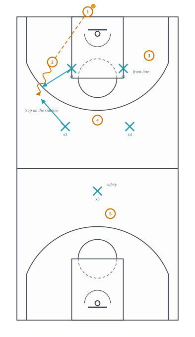
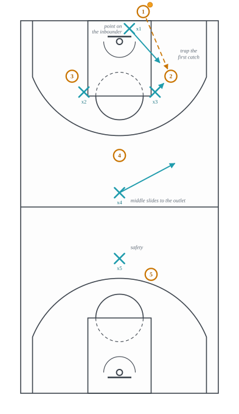

4.7: Presses
Chapter 4: Defense
Every defense in lectures 4.3 to 4.6 waited for the offense to arrive. The press does not. It applies pressure in the back court, from the inbound pass onward, and it is built for one of two purposes: to take the ball away before the offense has crossed half court, or to make crossing it cost so much time and effort that the offense arrives late, tired, and with the shot clock already spent. The press break of lecture 3.12 is the offense’s answer, and the two are best understood as one argument. The press bets that the offense cannot pass out of a trap; the press break is organized so that it always can.
Section 1 is what a press is and what it concedes, with the full-court picture that is the reason this site’s diagrams learned to draw the far basket. Section 2 is the trap and the safety, the two jobs every press has. Section 3 is why the press is a tool of the lower levels and the last two minutes. Section 4 is the named presses the glossaries carry.
1 Pressure in the back court
A press is a defense played in the offense’s half of the floor, and its unit of account is not the shot but the pass (Figure 1). A full-court press meets the inbound; a three-quarter-court press picks the ball up around the far free-throw line; a half-court trap waits at the midcourt line. All of them concede the same thing: a defense that is spread over ninety feet is not protecting its own rim, and a pass that beats the pressure arrives at a basket with one defender in front of it or none.

The picture shows the trade. Two defenders are on the ball at the sideline. Two more are positioned to take the passes out of the trap, one on the near sideline and one in the middle. That leaves one defender, the safety, for the whole front court, and if the trapped handler finds the pass over or through, the offense is playing three on one at the rim. The press is a defense that wins possessions and loses layups, and the question a coach asks before calling it is which he expects more of.
- Assignment
- Pick the ball up in the back court. Deny the easy inbound, trap the first dribble along a sideline, and cover the two nearest outlets. One safety stays behind everything.
- Concedes
- The long pass over the trap, and the layup at the end of it. Also the offensive rebound, since nobody is near the defensive glass when the shot goes up.
- Requires
- Five players in condition to sprint every possession, two who can trap without fouling, and a safety who is willing to be the only defender between the ball and the rim.
- Beaten by
- The press break: the ball reversed away from the trap, the outlet to the middle of the floor, and the pass ahead to the player the safety cannot reach. In lecture 3.12’s words, the middle is the answer.
2 The trap and the safety
Every press, whatever its shape, is two jobs. The first is the trap: two defenders converging on the ball where the sideline takes away one direction and their bodies take away the others. The sideline is the third defender in every trap, which is why presses funnel the dribbler toward it and never toward the middle. A handler trapped in the middle of the floor has passes in every direction; a handler trapped on the sideline has passes in two, and both are the ones the second line is waiting on.
The second job is the safety. One defender stays behind the whole press, nearer his own basket than any attacker, and his job is not to get the ball back but to make the layup a contested one when the press is beaten. A press without a safety is a defense that has decided the offense will never complete a pass, and it is beaten for a dunk the first time it does. The safety is also the defense’s rebounder, its outlet stopper when the press is broken, and usually its slowest player, which is not a coincidence: the four who can run are the four who press.
Between them, the second line reads the passer. When the trap is set, the two defenders behind it do not guard men; they guard the two passes the trapped handler can make, one to the sideline ahead and one to the middle, and they play them as interceptors rather than as defenders. The turnover a press produces is rarely a steal from the trapped handler. It is the pass he throws under pressure, caught by the defender who was reading his eyes.
3 The 1-2-1-1, the press that traps the inbound
The picture at the top of this lecture is a press with two defenders on the inbound and two behind them, and it lets the first pass be caught. The 1-2-1-1 press does not (Figure 2). One defender stands on the inbounder, two stand across the far free-throw line, one stands in the middle near half court, and one is the safety; seen from above the shape is a diamond with its point on the ball, which is why it is also called the diamond press. Its purpose is the first catch. The receiver takes the inbound at the free-throw line extended, and the point defender and the near wing defender are on him before he has turned around, while the inbounder, still out of bounds, cannot be passed back to. The middle defender slides to the sideline outlet and the safety takes whatever goes long.

It is the most aggressive of the common presses, because the trap comes with the ball ninety feet from the basket it is trying to reach and no dribble yet taken. It is also the easiest to beat with one good pass, since a receiver who catches and passes out of the trap before it closes has four teammates against three defenders with the whole floor in front of them. The press break of lecture 3.12 was drawn for exactly this shape: the inbound to the side, the immediate reversal, and the middle as the answer.
- Assignment
- Point on the inbounder; two across the free-throw line who trap the first catch with the point; one in the middle who takes the outlet; one safety behind everything.
- Concedes
- The pass out of the trap into a four-on-three, and every layup that follows a press beaten this far from the rim.
- Requires
- A point defender quick enough to go from the inbounder to the trap in one step, and a team that has practiced the rotation behind the trap more than the trap itself.
- Beaten by
- The press break: the inbound caught with the receiver’s back to the sideline, the immediate reversal to the other side, and the outlet to the middle before the trap closes.
4 Why the press is rare at the top
A press is a defense against a team that cannot handle it, and at the highest level every team can. Five professional players who can dribble, pass and catch under pressure break a press the same way every time: the ball goes to the middle, the middle passes ahead, and the press has traded its defensive shape for nothing. So in the professional game the press is a situational tool, used when the clock makes a possession worth more than a layup conceded, in the last two minutes of a game a team is losing, or for a possession or two after a timeout to catch an offense that has stopped concentrating.
Below that level the arithmetic changes. A high-school or college team may have two players who can handle the ball under a trap and three who cannot, and a press that finds the three wins possessions faster than it gives up layups. That is why the named presses in the next section come almost entirely from the coaching literature of those levels, and why a viewer who watches both will see presses often in one and almost never in the other.
5 Names heard for which there is no entry yet
The glossaries this site draws on name two more presses, each described by one publisher only, so under this site’s rule neither has an entry until a second independent source names it. The descriptions are given here so the word is not a mystery when it is heard; the rule and the dated diff are in the plan (plan/PLAN.md, section 8.4) and data/sources/glossary_diff_2026-09-21.md. The 1-2-1-1 above sat in this list until a second glossary named it on 2026-09-21.
- Run-and-jump. A full-court man-to-man press with rules that encourage jump-switching and trapping: a defender leaves his own man to jump the dribbler, and the dribbler’s defender switches onto the man left behind. The glossary that describes it attributes it to Dean Smith’s North Carolina teams of the 1970s.1 Named by one publisher.
- Zone press. A press in which the trapping defenders guard areas of the back court rather than men, so that a trap is set wherever the ball enters an area two defenders share. The 1-2-1-1 above is a zone press; the run-and-jump is not. Named by one publisher.
The idea to carry into lecture 4.8 is that the press treats the inbound as the most vulnerable moment of the possession, because the passer cannot move and the clock is running. The next lecture is about the defense’s other inbound problems: what to do when the offense has drawn up a play for exactly that moment.
Footnotes
Basketball For Coaches, “Basketball Terms”, https://www.basketballforcoaches.com/basketball-terms/, retrieved 2026-09-21. Verbatim: “The Run-and-Jump defense (or R&J) is a full-court man-to-man press with rules that encourage jump-switching and trapping.” and “It was first created by Dean Smith at North Carolina during the 1970’s.” Saved as
basketballforcoaches-termsin the source registry. The attribution to Dean Smith is that glossary’s claim and is not confirmed here by a second source.↩︎